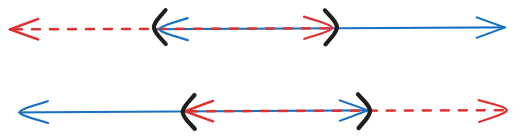
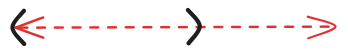

Tidyverse
dplyr
- Misc
- Docs
- Packages
- Resources
- Tidy Selectors
- Operators
:for selecting a range of consecutive variables.!for taking the complement of a set of variables.&and|for selecting the intersection or the union of two sets of variables.c()for combining selections.
- Select specific columns:
everything(): Matches all variables.last_col(): Select last variable, possibly with an offset.group_cols(): Select all grouping columns.
- Pattern Matching:
starts_with(): Starts with a prefix.ends_with(): Ends with a suffix.contains(): Contains a literal string.matches(): Matches a regular expression.num_range(): Matches a numerical range like x01, x02, x03.
- Variables stored in a character vector:
all_of(): Matches variable names in a character vector. All names must be present, otherwise an out-of-bounds error is thrown.- i.e. If you’ve defined a character with quoted names, e.g.
vars <- c("Sepal.Length", "Sepal.Width"
- i.e. If you’ve defined a character with quoted names, e.g.
any_of(): Same asall_of(), except that no error is thrown for names that don’t exist.
- Using a predicate function:
where(): Applies a function to all variables and selects those for which the function returnsTRUE.
- Operators
acrossAlso see R >> Snippets >> Cleaning >> Replace Values >> {dplyr}
Basic
darl_dat_proc <- darl_dat_raw |> mutate(across(where(is.numeric), scale))Format column names
iris %>% group_by(Species) %>% summarise(across(starts_with("Sepal"), mean, .names = "mean_{.col}"))Multiple Functions
# Using a named list in functions arg iris %>% group_by(Species) %>% summarise(across(starts_with("Sepal"), list(mean = mean, sd = sd), .names = "{.col}.{.fn}")) # When the list is not named, .fn is replaced by the function's position iris %>% group_by(Species) %>% summarise(across(starts_with("Sepal"), list(mean, sd), .names = "{.col}.fn{.fn}"))
arrangeBy group
gapminder_df |> group_by(year) |> arrange(gdpPercap, .by_group = TRUE)
case_whenand familyRecoding a column creates an entirely new column using values from an existing column. The new column may have a different type from the original column.
Replacing values within a column partially updates an existing column with new values. The result has the same type as the original column.
Summary
Recoding Replacing Match with conditions case_whenreplace_whenMatch with values recode_valuesreplace_valuesExample:
recode_valueslikert <- tibble( score = c(1, 2, 3, 4, 5, 2, 3, 1, 4) ) likert |> mutate( category = score |> recode_values( 1 ~ "Strongly disagree", 2 ~ "Disagree", 3 ~ "Neutral", 4 ~ "Agree", 5 ~ "Strongly agree" ) ) #> # A tibble: 9 × 2 #> score category #> <dbl> <chr> #> 1 1 Strongly disagree #> 2 2 Disagree #> 3 3 Neutral #> 4 4 Agree #> 5 5 Strongly agree #> 6 2 Disagree #> 7 3 Neutral #> 8 1 Strongly disagree #> 9 4 Agree # Using a look-up table lookup <- tribble( ~from , ~to , 1 , "Strongly disagree" , 2 , "Disagree" , 3 , "Neutral" , 4 , "Agree" , 5 , "Strongly agree" , ) likert |> mutate(category = recode_values(score, from = lookup$from, to = lookup$to))- This can be done with
case_when, but you have to repeatscore ==five times. - Adding unmatched = “error” will throw an error for unmatched cases. Requires explicitly stating
NA ~ NAfor missing values. By default, unmatched cases are given a NA value (can be changed using the default argument).
- This can be done with
Example:
replace_values(source)schools <- tibble( name = c("UNC", "Chapel Hill", NA, "Duke", "Duke University", "UNC", "NC State", "ECU") ) schools |> mutate( name = case_when( name %in% c("UNC", "Chapel Hill") ~ "UNC Chapel Hill", name %in% c("Duke", "Duke University") ~ "Duke", .default = name ) ) # equivalent schools |> mutate( name = name |> replace_values( c("UNC", "Chapel Hill") ~ "UNC Chapel Hill", c("Duke", "Duke University") ~ "Duke" ) ) #> # A tibble: 8 × 1 #> name #> <chr> #> 1 UNC Chapel Hill #> 2 UNC Chapel Hill #> 3 NA #> 4 Duke #> 5 Duke #> 6 UNC Chapel Hill #> 7 NC State #> 8 ECU # using a look-up table lookup <- tribble( ~from , ~to , "UNC" , "UNC Chapel Hill" , "Chapel Hill" , "UNC Chapel Hill" , "Duke" , "Duke" , "Duke University" , "Duke" , ) schools |> mutate(name = replace_values(name, from = lookup$from, to = lookup$to))
consecutive_idExample: (source)
df <- tibble( tch_id = rep(c(1, 2, 3), times = c(3, 4, 1)), date_obs = lubridate::ymd(c( "2025-01-02", "2025-01-02", "2024-01-01", "2025-01-10", "2025-01-15", "2025-01-15", "2025-01-07", "2025-01-08" )), rater = c(5, 10, 4, 5, 5, 10, 4, 4) ) df |> arrange(tch_id, date_obs) |> group_by(tch_id) |> mutate(obs_id = consecutive_id(date_obs)) #> # A tibble: 8 × 4 #> # Groups: tch_id [3] #> tch_id date_obs rater obs_id #> <dbl> <date> <dbl> <int> #> 1 1 2024-01-01 4 1 #> 2 1 2025-01-02 5 2 #> 3 1 2025-01-02 10 2 #> 4 2 2025-01-07 4 1 #> 5 2 2025-01-10 5 2 #> 6 2 2025-01-15 5 3 #> 7 2 2025-01-15 10 3 #> 8 3 2025-01-08 4 1- The newly created obs_id is nested inside tch_id using
group_by. A unique id is assigned according to each date_obs value. - Sorting via
arrangeprior to grouping and usingconsecutive_idis necessary so it orders by increasing dates. Otherwise, it assigns in whichever order the data happens to be in.
- The newly created obs_id is nested inside tch_id using
filterwhen_any,when_allAllows you use commas when separating conditions instead of logical operators
Example: Both ways are equivalent (source)
countries <- tibble( name = c("US", "CA", "PR", "RU", "US", NA, "CA", "PR"), score = c(200, 100, 150, NA, 50, 100, 300, 250) ) countries |> filter( (name %in% c("US", "CA") & between(score, 200, 300)) | (name %in% c("PR", "RU") & between(score, 100, 200)) ) #> # A tibble: 3 × 2 #> name score #> <chr> <dbl> #> 1 US 200 #> 2 PR 150 #> 3 CA 300 # equivalent countries |> filter(when_any( name %in% c("US", "CA") & between(score, 200, 300), name %in% c("PR", "RU") & between(score, 100, 200) ))when_allwould be used if the logical operator separating the condition was an&
filter_outRemoves the need for messy logic while using
filterwhen NAs are presentExample: (source)
patients <- tibble( name = c("Anne", "Mark", "Sarah", "Davis", "Max", "Derek", "Tina"), deceased = c(FALSE, TRUE, NA, TRUE, NA, FALSE, TRUE), date = c(2005, 2010, NA, 2020, 2010, NA, NA) ) # wrong! patients |> filter(!(deceased & date < 2012)) #> # A tibble: 3 × 3 #> name deceased date #> <chr> <lgl> <dbl> #> 1 Anne FALSE 2005 #> 2 Davis TRUE 2020 #> 3 Derek FALSE NA # right patients |> filter( !((deceased & !is.na(deceased)) & (date < 2012 & !is.na(date))) ) #> # A tibble: 6 × 3 #> name deceased date #> <chr> <lgl> <dbl> #> 1 Anne FALSE 2005 #> 2 Sarah NA NA #> 3 Davis TRUE 2020 #> 4 Max NA 2010 #> 5 Derek FALSE NA #> 6 Tina TRUE NA # equivalent patients |> filter_out(deceased, date < 2012)
rows_updateandrows_patchReplaces cell values
Example
tib_compl <- tib1 |> rows_update( tib2 |> filter(name %in% c("Bob", "Sam")) |> select(name, latitude = lat, longitude = long), by = "name" )- tib1 has NAs for Bob and Sam’s latitude and longitude
- tib2 has values in lat and long for Bob and Sam’s latitude and longitude
rows_updatereplaces the NAs in tib1 with the values in tib2
Example: (source)
df #> # A tibble: 5 x 4 #> id grade item1 item2 #> <dbl> <dbl> <dbl> <dbl> #> 1 22 3 4 5 #> 2 23 3 5 4 #> 3 24 4 2 1 #> 4 25 5 NA NA #> 5 26 4 NA NA 1extra_form #> # A tibble: 2 x 4 #> id grade item1 item2 #> <dbl> <dbl> <dbl> <dbl> #> 1 25 5 2 3 #> 2 26 5 4 5 2df |> rows_patch(extra_form, by = "id") #> # A tibble: 5 x 4 #> id grade item1 item2 #> <dbl> <dbl> <dbl> <dbl> #> 1 22 3 4 5 #> 2 23 3 5 4 #> 3 24 4 2 1 #> 4 25 5 2 3 #> 5 26 4 4 5 3df |> rows_update(extra_form, by = "id") #> # A tibble: 5 x 4 #> id grade item1 item2 #> <dbl> <dbl> <dbl> <dbl> #> 1 22 3 4 5 #> 2 23 3 5 4 #> 3 24 4 2 1 #> 4 25 5 2 3 #> 5 26 5 4 5- 1
- Additional dataset collected from a separate form. (Note that in addition to filling in the NAs, the grade for id 26 changed from 4 to 5)
- 2
- Don’t update existing data, just fill-in NAs
- 3
- Completely u,pdate existing data
sliceNotes from Row relational operations with slice()
- In-depth look at
slicefunctionality. It has other examples that I haven’t listed here, e.g interleaving rows, inserting a row at specific intervals.
- In-depth look at
Some Operations
starwars |> slice(1:6) # First six rows starwars |> slice(5, 1, 6) # specific indices, keeps order starwars |> slice(n() - 2:0) # Last three rows starwars |> slice(-(4:n())) # All rows except fourth row to last rowtidyeval:
starwars |> slice(!!!list(1, 2:4, 5, 6))Using
whichtib_comp |> slice(1:which(tib_comp$address == "1549 Berry Blvd"))
{kind=link}
tidyr
pivoting
Example:
# orignal data #> # A tibble: 1 × 6 #> MEAN_BMI MEAN_BMI_se MEAN_BMI_low MEAN_BMI_upp MEDIAN_BMI MEDIAN_BMI_se #> <dbl> <dbl> <dbl> <dbl> <dbl> <dbl> #> 1 28.0 0.0480 27.9 28.1 27.4 0.0255 svy_avg_bmi_long_nhis <- svy_avg_bmi_nhis |> as_tibble() |> pivot_longer( cols = everything(), names_to = c("statistic", "variable", "uncertainty"), names_sep = "_" ) |> #> # A tibble: 6 × 4 #> statistic variable uncertainty value #> <chr> <chr> <chr> <dbl> #> 1 mean bmi NA 28.0 #> 2 mean bmi se 0.0480 #> 3 mean bmi low 27.9 #> 4 mean bmi upp 28.1 #> 5 median bmi NA 27.4 #> 6 median bmi se 0.0255 pivot_wider( names_from = "uncertainty", values_from = "value") |> rename(value = `NA`, upper = upp, lower = low) |> dplyr::relocate(variable, .before = statistic) #> # A tibble: 2 × 6 #> variable statistic value se lower upper #> <chr> <chr> <dbl> <dbl> <dbl> <dbl> #> 1 bmi mean 28.0 0.0480 27.9 28.1 #> 2 bmi median 27.4 0.0255 NA NA- From Surveys, Analysis >> {srvyr} >> Example: Basic >> Calculate Statistics
completedat |> tidyr::complete(order, num_links = 1:max(num_links), fill = list(tot_nodes = 0))- Completes a data frame that has missing combinations of data
- Before this function, I think you would have to
pivot_widerand fill with 0s, NAs, etc., thenpivot_longerback to the original form.
- Before this function, I think you would have to
- In this scenario, the data is in long format with many rows for each order category.
- Each order category has a sequence of num_link (discrete) numerical values associated with it.
- I want each order category to have the full range of num_link values (for a table plot), but each category only has a few.
- This function adds the missing num_link values to each order category and assigns a zero in the tot_nodes column when it does.
- From Geospatial, Spatial Weights, >> Diagnostics >> Connectedness >> Example 2
- Completes a data frame that has missing combinations of data
uncountuncount_df <- tibble(x = c("a", "b"), n = c(1, 2)) uncount_df |> uncount(n) #> # A tibble: 3 × 1 #> x #> <chr> #> 1 a #> 2 b #> 3 b
purrr
- Docs
- Notes from Mastering purrr: From Basic Maps to Functional Magic in R
- Packages
- {SafeMapper} - Provides drop-in replacements for ‘purrr’ and ‘furrr’ mapping functions with built-in fault tolerance, automatic checkpointing, and seamless recovery capabilities.
- When long-running computations are interrupted due to errors, system crashes, or other failures, simply re-run the same code to automatically resume from the last checkpoint.
- Ideal for large-scale data processing, API calls, web scraping, and other time-intensive operations where reliability is critical.
- {SafeMapper} - Provides drop-in replacements for ‘purrr’ and ‘furrr’ mapping functions with built-in fault tolerance, automatic checkpointing, and seamless recovery capabilities.
Loops
maptib_tax_comp <- map(tib_comp$address, \(x) get_tax_amt(x), .progress = TRUE) |> list_rbind(names_to = "address")imap- Useful to include the index or names of elements in your function calls.# A named list of scores named_scores <- list(math = 90, science = 85, history = 78) # Create descriptive strings for each score score_descriptions <- imap( named_scores, ~ paste(.y, "score is", .x) ) score_descriptions $math [1] "math score is 90" $science [1] "science score is 85" $history [1] "history score is 78"map_ifmixed_list <- list(1, "a", 3, "b", 5) doubled_numbers <- map_if( mixed_list, is.numeric, ~ .x * 2 )map_atspecific_list <- list(a = 1, b = "hello", c = 3, d = "world") # Convert only the character elements to uppercase uppercase_chars <- map_at(specific_list, c("b", "d"), ~ toupper(.x))walk- When you just want the side-effects and not return anythingpurrr::walk(grps, ~chk::chk_character_or_factor(.x, x_name = "... (group columns)") )pmap- To iterate by element across each listlol <- list(alg_list, grid_list, n_iter_list) # Setting up multiple RandomSearchCV objects, 1 for each algorithm # Collecting them in the inner-loop list inner_loop <- purrr::pmap(lol, function(alg, grid, n_iter) { sk_ms$RandomizedSearchCV( estimator = alg, param_distributions = grid, n_iter = n_iter, scoring = 'neg_mean_absolute_error', cv = inner_cv, n_jobs = -1L, pre_dispatch = '2*n_jobs', refit = TRUE) } )
List Operations
modify- Applies a transformation to each element of a list or vector and returns the modified list or vector.if ("step.pattern" %in% names(params[[dist_alg]])) { grid_final <- purrr::modify(grid_initial, .f = function(x) { # coerce step pattern obj to a numeric vector to determine which step pattern it is step_test <- as.numeric(x$step.pattern) step_sym1 <- as.numeric(dtw::symmetric1) step_sym2 <- as.numeric(dtw::symmetric2) # compare patterns' numeric vectors then add step.pattern label to grid if (all(step_test == step_sym1)) { param_ls <- append(x, c(step_pattern_id = "symmetric1")) } else { param_ls <- append(x, c(step_pattern_id = NA)) } return(param_ls) } ) }every- Checks if all elements in a list or vector satisfy a given predicate. If all elements meet the condition, it returns TRUE; otherwise, it returns FALSE.numbers <- list(2, 4, 6, 8) # Check if all numbers are even every(numbers, ~ .x %% 2 == 0) #> [1] TRUE mtcars %>% select(hp) %>% map_lgl(~some(.x, ~ .x > 150)) #> hp #> TRUEsome- Checks if at least one element in a list or vector satisfies a given predicate. If any element meets the condition, it returns TRUE; otherwise, it returns FALSE.none- Checks if no elements in a list or vector satisfy a given predicate. If no elements meet the condition, it returns TRUE; otherwise, it returns FALSE.
keep- Retains elements that satisfy a given predicate. If an element meets the condition, it is kept; otherwise, it is removed.# Keep cars with mpg greater than 20 and discard cars with hp less than 100 filtered_cars <- mtcars %>% split(1:nrow(.)) %>% keep(~ .x$mpg > 20) %>% discard(~ .x$hp < 100) %>% bind_rows() filtered_cars #> mpg cyl disp hp drat wt qsec vs am gear carb #> Mazda RX4 21.0 6 160.0 110 3.90 2.620 16.46 0 1 4 4 #> Mazda RX4 Wag 21.0 6 160.0 110 3.90 2.875 17.02 0 1 4 4 #> Hornet 4 Drive 21.4 6 258.0 110 3.08 3.215 19.44 1 0 3 1 #> Lotus Europa 30.4 4 95.1 113 3.77 1.513 16.90 1 1 5 2 #> Volvo 142E 21.4 4 121.0 109 4.11 2.780 18.60 1 1 4 2- Similar with
discard splitsplits the df into a list of row elements
- Similar with
transposeAlso see JSON >> {tidyr}
Example: Basic
people <- list( person1 = list(name = "Alice", age = 30), person2 = list(name = "Bob", age = 25) ) # Transpose to get: list of attributes, each with multiple values transpose(people) #> $name #> $name$person1 #> [1] "Alice" #> #> $name$person2 #> [1] "Bob" #> #> #> $age #> $age$person1 #> [1] 30 #> #> $age$person2 #> [1] 25 transpose(people) |> map(unlist) #> $name #> person1 person2 #> "Alice" "Bob" #> #> $age #> person1 person2 #> 30 25The list structure has been flipped from where each element is a row (in the df sense) to where each element is a column.
This is more easily seen by using
unlistand having the bottom level elements be named vectors.
Example: json-like structure (unnamed list)
json_data <- list( list(id = 1, value = "a"), list(id = 2, value = "b") ) transpose(json_data) #> $id #> $id[[1]] #> [1] 1 #> #> $id[[2]] #> [1] 2 #> #> #> $value #> $value[[1]] #> [1] "a" #> #> $value[[2]] #> [1] "b" transpose(json_data) |> map(unlist) #> $id #> [1] 1 2 #> #> $value #> [1] "a" "b"
Other Iteratives
reduceExample 1: Recursively join dataframes
react_tbl_list <- list(react_dd_heat, avg_covid_icu_hist, avg_covid_hosp_hist, avg_total_inpat_beds_hist) react_tab_final <- purrr::reduce(react_tbl_list, left_join, by = "hospital_name")Example 2: Recursively layer geoms (article)
viridis_colors <- viridis::viridis(10) # old # mtcars %>% # ggplot(aes(hp, mpg)) + # geom_point(size = 10, color = viridis_colors[5]) + # geom_point(size = 8, color = viridis_colors[4]) + # geom_point(size = 6, color = viridis_colors[3]) + # geom_point(size = 4, color = viridis_colors[2]) + # geom_point(size = 2, color = viridis_colors[1]) + # scale_x_discrete(expand = expansion(.2)) + # scale_y_continuous(expand = expansion(.2)) + # theme_void() + # theme(panel.background = element_rect(fill = "grey20")) # new reduce( 5L:1L, ~ .x + geom_point(size = .y * 2, color = viridis_colors[.y]), .init = mtcars %>% ggplot(aes(hp, mpg)) + scale_x_discrete(expand = expansion(.2)) + scale_y_continuous(expand = expansion(.2)) + theme_void() + theme(panel.background = element_rect(fill = "grey20")) )- .x seems like it’s the code that’s recursively returned and .y is the new value from the iterable with iterable values being inputted from left to right.
- The order of ggplot calls doesn’t matter. See methods 2 and 3 in the article for solutions to situations when you want to place
reduceat a specific place within a chain of code - The output of this is one chart with mulitple sized dots layered on top of each other. It’s a sort of tree ring effect on the dots of a scatterplot.
Example 3: Iterate functions
square <- function(x) x^2 deviation <- function(x) x - mean(x) nums <- runif(100) my_funs <- list(deviation, square, mean, sqrt) reduce( my_funs, ~ .y(.x), .init = nums )- See Example 2 in
reduce2for interating functions and arguments
- See Example 2 in
reduce2Same as reduce but takes two iterables as arguments
Example 1: Individually style columns in a kable table (article)
# using reduce # numbers <- 3:5 # background_colors <- c("skyblue", "forestgreen", "chocolate") # # (mtcars %>% # head() %>% # kbl() %>% # kable_classic(html_font = "Roboto")) %>% # reduce( # 1:3, # ~ .x %>% column_spec(numbers[.y], background = background_colors[.y]), # .init = . # ) (mtcars %>% head() %>% kbl() %>% kable_classic(html_font = "Roboto")) %>% reduce2( 3:5, # 1st varying argument (represented by ..2) c("skyblue", "forestgreen", "chocolate"), # 2nd varying argument (represented by ..3) ~ ..1 %>% column_spec(..2, background = ..3), .init = . )- ..1 is like the .x and ..2 is like the .y from
reduce. The only new part is ..3 which refers to the second varying argument.
- ..1 is like the .x and ..2 is like the .y from
Example 2: Iterate functions and arguments
reduce2( my_list_of_funs, my_list_of_args, ~ do.call(..2, c(list(dat = ..1), ..3)), .init = mtcars )The list of arguments is actually a list of lists with each set of arguments getting its own list.
See Example 1 for descriptions of the “..1” etc. syntax
Example 3: Add attributes to a tibble
ls_summ_wgts #> $summ_wgts_spatlag_1 #> [1] "Characteristics of weights list object:" "Neighbour list object:" #> [3] "Number of regions: 281 " "Number of nonzero links: 1124 " #> [5] "Percentage nonzero weights: 1.423488 " "Average number of links: 4 " #> [7] "Non-symmetric neighbours list" "" #> [9] "Weights style: raw " "Weights constants summary:" #> [11] " n nn S0 S1 S2" "raw 281 78961 1115.166 1852.191 18483.96" #> #> $summ_wgts_spatlag_2 #> [1] "Characteristics of weights list object:" "Neighbour list object:" #> [3] "Number of regions: 281 " "Number of nonzero links: 1671 " #> [5] "Percentage nonzero weights: 2.116235 " "Average number of links: 5.946619 " #> [7] "10 regions with no links:" "62, 63, 64, 65, 67, 94, 95, 96, 97, 98" #> [9] "Non-symmetric neighbours list" "" #> [11] "Weights style: raw " "Weights constants summary:" #> [13] " n nn S0 S1 S2" "raw 271 73441 1569.462 2092.512 39004.72" tib_lags <- purrr::reduce2( names(ls_summ_wgts), ls_summ_wgts, .init = tib_lags, .f = function(obj, name, value) { attr(obj, name) <- value obj } )- From {ebtools::add_spatial_lags}
- I would’ve thought
walk2would’ve worked in this scenario but it did not. tib_lags doesn’t retain the attribute assignments.walk2cannot modify an object. - obj, is the first argument, so .f knows it’s the .init value, tib_lags.
- name, is the second argument, so .f knows it’s the first iterable,
names(ls_summ_wgts) - value, is the third argument, so .f knows it’s the second iterable, ls_sum_wgts
accumulateIt’s like
reduce, except instead of returning a single value which is the output of the very last function call, it keeps all intermediate values and returns them in a list.Example: (article)
plots <- (mtcars %>% ggplot(aes(hp, mpg)) + scale_x_discrete(expand = expansion(.2)) + scale_y_continuous(expand = expansion(.2)) + theme_void() + theme(panel.background = element_rect(fill = "grey20"))) %>% accumulate( 10L:1L, ~ .x + geom_point(size = .y ^ 1.5, color = viridis_colors[.y]), .init = . ) for (i in plots) { plot(i) }Variation of Example 2 in the
reducesectionUnlike
reducewhere the output was one plot,accumulateoutputs a list of plots. One for each value of the iterable.
accumulate2It’s like
reduce2, except instead of returning a single value which is the output of the very last function call, it keeps all intermediate values and returns them in a list.Example: (article)
tables <- mtcars %>% head() %>% kbl() %>% kable_classic(html_font = "Roboto") %>% kable_styling(full_width = FALSE) %>% # Added to keep aspect ratio constant when saving accumulate2( 1:(length(mtcars)+1), viridis::viridis(length(mtcars)+1), ~ column_spec(..1, ..2, background = ..3, color = if(..2 < 5){"white"}), .init = . )- Produces a table for each individually styled column and stores them all in a list.
compose- Sequentially apply functions# Define scaling and log functions scale_by_10 <- function(x) x * 10 safe_log <- safely(log, otherwise = NA) # Compose them into a single function scale_and_log <- compose(safe_log, scale_by_10) # Apply the composed function to the hp column mtcars <- mtcars %>% mutate(log_scaled_hp = map_dbl(hp, ~ scale_and_log(.x)$result)) head(mtcars) #> mpg cyl disp hp drat wt qsec vs am gear carb log_scaled_hp #> Mazda RX4 21.0 6 160 110 3.90 2.620 16.46 0 1 4 4 7.003065 #> Mazda RX4 Wag 21.0 6 160 110 3.90 2.875 17.02 0 1 4 4 7.003065 #> Datsun 710 22.8 4 108 93 3.85 2.320 18.61 1 1 4 1 6.835185 #> Hornet 4 Drive 21.4 6 258 110 3.08 3.215 19.44 1 0 3 1 7.003065 #> Hornet Sportabout 18.7 8 360 175 3.15 3.440 17.02 0 0 3 2 7.467371 #> Valiant 18.1 6 225 105 2.76 3.460 20.22 1 0 3 1 6.956545
lubridate
Generate
make_datevec_d <- make_date( year = 1970L, month = c(rep(1, 31), rep(2, 28)), day = c(seq.int(1:31), seq.int(1:28)) ) vec_d #> [1] "1970-01-01" "1970-01-02" "1970-01-03" "1970-01-04" "1970-01-05" "1970-01-06" "1970-01-07" "1970-01-08" "1970-01-09" "1970-01-10" #> [11] "1970-01-11" "1970-01-12" "1970-01-13" "1970-01-14" "1970-01-15" "1970-01-16" "1970-01-17" "1970-01-18" "1970-01-19" "1970-01-20" #> [21] "1970-01-21" "1970-01-22" "1970-01-23" "1970-01-24" "1970-01-25" "1970-01-26" "1970-01-27" "1970-01-28" "1970-01-29" "1970-01-30" #> [31] "1970-01-31" "1970-02-01" "1970-02-02" "1970-02-03" "1970-02-04" "1970-02-05" "1970-02-06" "1970-02-07" "1970-02-08" "1970-02-09" #> [41] "1970-02-10" "1970-02-11" "1970-02-12" "1970-02-13" "1970-02-14" "1970-02-15" "1970-02-16" "1970-02-17" "1970-02-18" "1970-02-19" #> [51] "1970-02-20" "1970-02-21" "1970-02-22" "1970-02-23" "1970-02-24" "1970-02-25" "1970-02-26" "1970-02-27" "1970-02-28"make_datetimevec_dt <- make_datetime( year = 1999, month = 12, day = 22, sec = seq.int(10, 30) ) head(vec_dt) #> [1] "1999-12-22 00:00:10 UTC" "1999-12-22 00:00:11 UTC" "1999-12-22 00:00:12 UTC" "1999-12-22 00:00:13 UTC" "1999-12-22 00:00:14 UTC" #> [6] "1999-12-22 00:00:15 UTC"
Parsing
parse_date_time## different ymd orders x <- c("2009-01-01", "02022010", "02-02-2010") parse_date_time(x, c("dmY", "ymd")) #> [1] "2009-01-01 UTC" "2010-02-02 UTC" "2010-02-02 UTC" ## "2009-01-01 UTC" "2010-02-02 UTC" "2010-02-02 UTC"- Function can handle all kinds of date and datetime shenanigans. See function docs examples.
Arithmetic
Adding seconds to a timestamp
hms("05:10:02") + seconds_to_period(180) #> [1] "5H 13M 2S"- This increases minutes when the seconds exceeds 59 instead of just adding to seconds, e.g “5H 10M 182S”
Adding months (in a leap year) (Rapp newletter)
jan31 <- make_date(2024, 1, 31) jan31 + months(1) #> [1] NA jan31 + dmonths(1) #> [1] "2024-03-01 10:30:00 UTC" jan31 %m+% months(1) #> [1] "2024-02-29" make_date(2023, 1, 31) %m+% months(1) #> [1] "2023-02-28"monthsis base R. There is amonththat’s in lubridate, but it’s for extracting the month from a date object or setting the month in a date object
Intervals
Lubridate’s interval functions
Notes from: Wrangling interval data using lubridate
Difference between dates
# Load the lubridate package library(lubridate) # Sample dates start_date <- ymd("2022-01-15") end_date <- ymd("2023-07-20") # Calculate months difference using lubridate months_diff_lubridate <- interval(start_date, end_date) %/% months(1) cat("Number of months using lubridate:", months_diff_lubridate, "\n") #> Number of months using lubridate: 18%/%is used for floor division by months. For decimals, just use/
Data
(house_df <- tibble( person_id = factor(c("A10232", "A10232", "A10232", "A39211", "A39211", "A28183", "A28183", "A10124")), house_id = factor(c("H1200E", "H1243D", "H3432B", "HA7382", "H53621", "HC39EF", "HA3A01", "H222BA")), start_date = ymd(c("20200101", "20200112", "20211120", "19800101", "19900101", "20170303", "20190202", "19931023")), end_date = ymd(c("20200112", "20211120", "20230720", "19891231", "20170102", "20180720", "20230720", "20230720")) )) #> A tibble: 8 × 4 #> person_id house_id start_date end_date #> <fct> <fct> <date> <date> #> 1 A10232 H1200E 2020-01-01 2020-01-12 #> 2 A10232 H1243D 2020-01-12 2021-11-20 #> 3 A10232 H3432B 2021-11-20 2023-07-20 #> 4 A39211 HA7382 1980-01-01 1989-12-31 #> 5 A39211 H53621 1990-01-01 2017-01-02 #> 6 A28183 HC39EF 2017-03-03 2018-07-20 #> 7 A28183 HA3A01 2019-02-02 2023-07-20 #> 8 A10124 H222BA 1993-10-23 2023-07-20Create interval column
house_df <- house_df |> mutate( # create the interval int = interval(start_date, end_date), # drop the start/end columns .keep = "unused" ) house_df #> A tibble: 8 × 3 #> person_id house_id int #> <fct> <fct> <Interval> #> 1 A10232 H1200E 2020-01-01 UTC--2020-01-12 UTC #> 2 A10232 H1243D 2020-01-12 UTC--2021-11-20 UTC #> 3 A10232 H3432B 2021-11-20 UTC--2023-07-20 UTC #> 4 A39211 HA7382 1980-01-01 UTC--1989-12-31 UTC #> 5 A39211 H53621 1990-01-01 UTC--2017-01-02 UTC #> 6 A28183 HC39EF 2017-03-03 UTC--2018-07-20 UTC #> 7 A28183 HA3A01 2019-02-02 UTC--2023-07-20 UTC #> 8 A10124 H222BA 1993-10-23 UTC--2023-07-20 UTCIntersection Function
int_intersect <- function(int, int_limits) { int_start(int) <- pmax(int_start(int), int_start(int_limits)) int_end(int) <- pmin(int_end(int), int_end(int_limits)) return(int) }- The red dashed line is the reference interval and the blue solid line is the interval of interest
- The function creates an interval thats the intersection of both intervals (segment between black parentheses)
Proportion of the Reference Interval
int_proportion <- function(dat, reference_interval) { # start with the housing data dat |> # only retain overlapping rows, this makes the following # operations more efficient by only computing what we need filter(int_overlaps(int, reference_interval)) |> # then, actually compute the overlap of the intervals mutate( # use our earlier truncate function int_sect = int_intersect(int, reference_interval), # then, it's simple to compute the overlap proportion prop = int_length(int_sect) / int_length(reference_interval) ) |> # combine different intervals per person summarize(prop_in_nl = sum(prop), .by = person_id) }Example
int_2017 <- interval(ymd("20170101"), ymd("20171231")) prop_2017 <- int_proportion(dat = house_df, reference_interval = int_2017) prop_2017 #> # A tibble: 3 × 2 #> person_id prop_in_nl #> <fct> <dbl> #> 1 A39211 0.00275 #> 2 A28183 0.832 #> 3 A10124 1
{kind=link}
{kind=link}